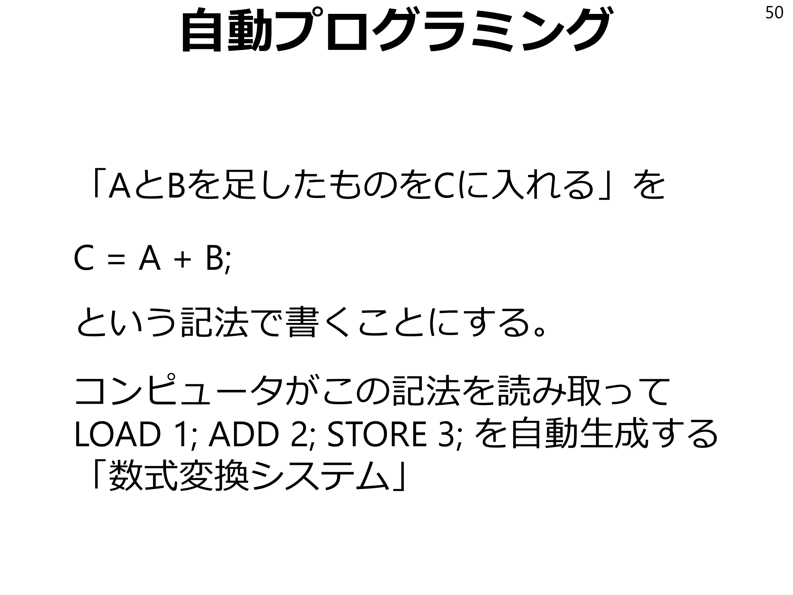
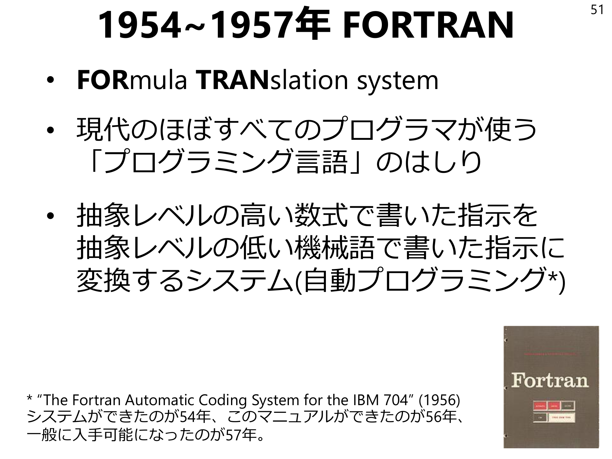

p13Kaggleによる調査13機械学習コンペティション最大手のKaggleによって大規模な調査が行われた7301人のデータサイエンティストに仕事で使っている機械学習手法を聞いたら…The State of ML and Data Science 2017 | Kaggle https://www.kaggle.com/surveys/2017
p49自動プログラミング以前49「AとBを足したものをCに入れる」をやりたいLOAD 1 ADD 2 STORE 3メモリの1番地にある値を計算用の一時領域にロードメモリの2番地にある値をそれに加算一時領域にある値をメモリの3番地に保存これは話を簡単にするための疑似コードで、実際はもっと複雑です

p50自動プログラミング50「AとBを足したものをCに入れる」をC = A + B;という記法で書くことにする。コンピュータがこの記法を読み取ってLOAD 1; ADD 2; STORE 3;を自動生成する「数式変換システム」

p5119541957年FORTRAN 51 •FORmula TRANslation system •現代のほぼすべてのプログラマが使う「プログラミング言語」のはしり•抽象レベルの高い数式で書いた指示を抽象レベルの低い機械語で書いた指示に変換するシステム(自動プログラミング*) *“The Fortran Automatic Coding System for the IBM 704" (1956)システムができたのが54年、このマニュアルができたのが56年、一般に入手可能になったのが57年。
p57確実性を犠牲にコストを削減57 •人間が条件を明確化しないので「条件通りに動いているか?」という問いが無意味•「検証データの9割は正しく判断できますね」みたいなことしか言えない•確実性を犠牲にして仕様記述コストを下げるp58まとめ58 •自動プログラミング•スクリプト言語•機械学習共通しているのは人のコストの削減p59アカデミア視点とビジネス視点59ビジネス視点から言えば•コストの減少によって•新たな財貨やその生産方法が•「商業的に実現可能な範囲」に入る現象アカデミアの評価軸とビジネスの評価軸は違うp60アカデミアとビジネスの違い60アカデミア•データが公開されている•枯れた技術はとっくの昔に調査済み•新しい手法を考案して精度を競い合うビジネス•データが公開されてない枯れた技術を使うp61ビジネスの評価軸61顧客価値新規性ではないp62顧客価値を体感するための小問62ある宝石の原石は、割ると1/2の確率で宝石が入っていて2万円で売れる。原石は1つ9500円で買える。原石は硬いので1日に20個しか割れないQ1: 1日に稼げる収益の期待値はいくらか仕入れ原価原石1/2宝石9500円×1/2売上2万円0円p63A1収益の期待値63 A1: 1/2の確率で20000円手に入るので、1個あたりの収入の期待値は10000円。1個あたりの仕入れ価格は9500なので、1個あたりの収益は500円。1日に20個処理できるので、1日あたりの収益は10000円。原価9500円売上1万円1つあたり500円の利益p64Q2加工速度二倍の装置64 Q2:原石を人間の2倍の速度で割る機械を手に入れたとする。つまり、1日に割ることができる原石の数が20個から40個に増えたとする。収益の期待値はいくら増えるか?p65A2加工速度二倍の装置65 A2:原石1個あたり500円の利益なのは変わらない。1日に処理できる量が20個から40個に増える。20個増えるので、利益は1万円増える。原価9500円売上1万円1つあたり500円の利益p66Q3 60%の識別器66 Q3: 60%の確率で宝石の入った原石を当てる識別器*が買えるとする。収益の期待値はいくら増えるか?仕入れ原価原石60%宝石9500円×40%売上2万円0円*原石を買う前に使うことで「60%の確率で宝石が入っている原石」を9500円で手に入れられるようになるとします。お店の人が嫌がりそう、という点は今回は気にません。またQ2の機械は手に入っておらず、1日に割れる数は20個のままとします。p67A3: 60%の識別器67 60%の確率で20000円手に入るので、1個あたりの収入の期待値は12000円。1個あたりの仕入れ価格は9500円なので、1個あたりの収益は2500円。1日に20個処理できるので1日あたりの収益は5万円。4万円増える。原価9500円売上12000円1つあたり2500円の利益p68つまり68この問題設定では、「加工速度を2倍にする装置」は顧客の利益を1万円増やし、「精度60%の識別器」は顧客の利益を4万円増やす。「精度60%の識別器」が「加工速度を2倍にする装置」の4倍の顧客価値を持っている。p69まとめ69 •ビジネス視点では顧客価値が大事•顧客価値は「手法の新規性」ではない•顧客価値と精度はイコールではないp70強制オープンイノベーション70 •2017年、Appleが初の機械学習論文を発表•Appleですら社員の「発表したい」という要望にNOと言えなくなった•機械学習技術をクローズドに独占できない•「オープンイノベーションは、選択肢ではない。事実だ」**元ネタは2009年ライス国務長官の"Globalization is not a choice but a fact"p71専門技術の市場調達71専門技術を市場調達しようと考える企業も多いしかし専門家の能力は観測が困難評価能力がないと…(ここでオフレコの酷い話をする)p72契約理論72契約当事者間で情報の非対称性がある場合にどういう解決策があるか•シグナリング•スクリーニングp73シグナリング73情報を持っている側がやる行為。たとえば「能力」は観測が困難そこで「能力」を示すことができるような「シグナル」を獲得しようとするp74シグナリング74なぜAppleの社員は論文発表をしたいのか?それは論文発表実績が「シグナル」となり、Apple以外に転職する場合に有利だから。専門家を市場調達する場合、その専門家はシグナルを出せることを要求してくる可能性が高い。p75スクリーニング75情報を持っていない側がやる行為。たとえば営業マンに対して「低い固定給+歩合報酬」を提示する。能力の低い営業マンは勝手に避けてくれる。しかし…p76機械学習と成果報酬76機械学習は「実際のデータで試してみないと成果が出るかどうかわからない」という成果報酬と相性の悪い特徴がある。機械学習の専門家側としては成果報酬のプロジェクトは引き受けたくない。(ビジネス側の出してくるデータが汚いと自分の能力と無関係に成果が出なくなる)成果を確約する請負契約ですら結びたくない。p77スモールスタート77能力の高い専門家ほど得をするような契約形態を模索しなければならない。まだ完全な解決策は考案できていないが1つの案は最初の一歩の契約を小さくし「うまくいきそうと双方が合意したら延長」とする戦略。専門家の側としては筋悪なプロジェクトに長期間拘束されることもないし、能力が高い方が延長に到る確率が高い。p78レベニューシェア78もう一つの戦略がレベニューシェア、プロジェクトによって得られる利益を専門家と定率でシェアする方法。利益を出すことに対して両者が協力する。だが、専門家側としては、自分の技能以外に運用側の能力によって成果が変動するのでレベニューシェア単独の契約は引き受けづらいもうひとひねりが必要そう。p79まとめ79 •強制的にオープンイノベーション•専門技能を市場調達する際には情報の非対称性の問題が発生する•契約理論はより良い契約のために有益な示唆を与えてくれるp80全体まとめ80 •手段を目的化しない。•AIは仕事を奪うのではなく人間を増強する=人間の支払う時間コストの削減•アカデミアとビジネスの評価軸の違い。顧客価値≠新規性・精度